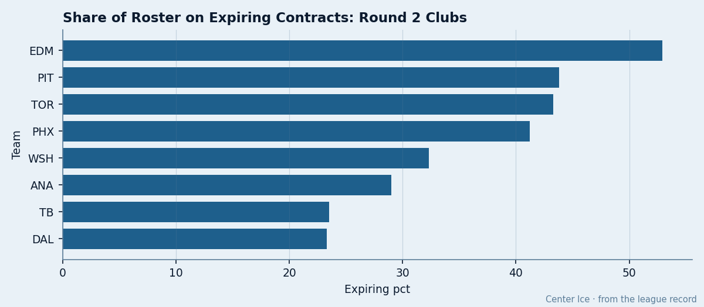
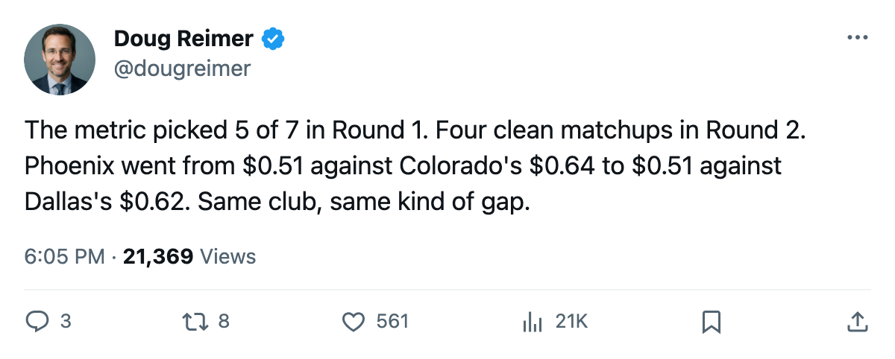
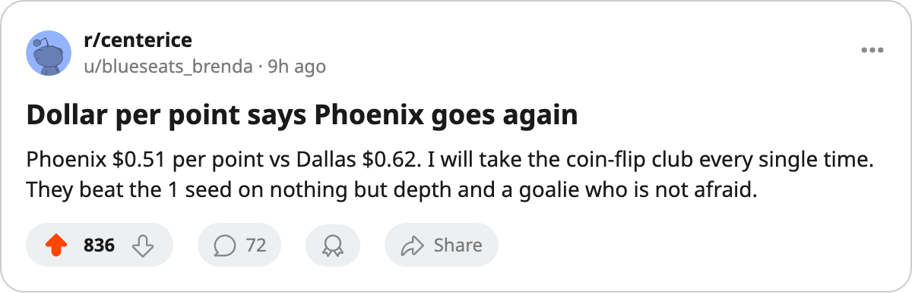

Dollar-per-Point Faces Four Clean Tests: Which Round 2 Series Does the Metric Have the Most Confidence In?
The metric called the right side in 5 of 7 non-tied first-round matchups. All four Round 2 pairings have a clear cheaper club. The gap sizes tell you which calls are strong and which are coin flips.
 Doug ReimerAnalytics editor, ex-video coach · The Slot Report
Doug ReimerAnalytics editor, ex-video coach · The Slot Report
Payroll divided by points. The simplest efficiency metric in hockey. In Round 1, the club with the lower per-point figure won 5 of the 7 series where the two sides differed.  Pittsburgh Penguins ($0.53M a point) eliminated
Pittsburgh Penguins ($0.53M a point) eliminated  New Jersey Devils ($0.40M), and
New Jersey Devils ($0.40M), and  Edmonton Oilers ($0.38M) eliminated
Edmonton Oilers ($0.38M) eliminated  Vancouver Canucks ($0.36M). Both were misses.
Vancouver Canucks ($0.36M). Both were misses.
Round 2 starts tomorrow and offers four matchups where the metric has a clear side in each.
| matchup | cheaper club | their $/pt | more expensive club | their $/pt |
|---|---|---|---|---|
 Dallas Stars vs Dallas Stars vs  Phoenix Coyotes Phoenix Coyotes | PHX | $0.51M | DAL | $0.62M |
 Toronto Maple Leafs vs Pittsburgh Penguins Toronto Maple Leafs vs Pittsburgh Penguins | TOR | $0.45M | PIT | $0.53M |
 Tampa Bay Lightning vs Tampa Bay Lightning vs  Washington Capitals Washington Capitals | TB | $0.45M | WSH | $0.54M |
Edmonton Oilers vs  Mighty Ducks of Anaheim Mighty Ducks of Anaheim | EDM | $0.38M | ANA | $0.42M |
The strongest signal: Phoenix over Dallas
The spread between Phoenix Coyotes at $0.51M and Dallas Stars at $0.62M is the widest in Round 2. And it is the same club, Phoenix Coyotes, that the metric backed against the #1 seed  Colorado Avalanche at $0.64M in Round 1. Phoenix Coyotes won that in 7. Now it faces another opponent with a wider payroll-to-points ratio.
Colorado Avalanche at $0.64M in Round 1. Phoenix Coyotes won that in 7. Now it faces another opponent with a wider payroll-to-points ratio.
Phoenix finished 93 points on $47.81M. Dallas finished 109 on $67.99M. One of them needed $20M more in payroll to do it, and lost 16 points of output to get there.

The coin flip: Edmonton over Anaheim
The spread between Edmonton Oilers at $0.38M and Mighty Ducks of Anaheim at $0.42M is the narrowest in Round 2. Edmonton is already a miss: it beat Vancouver Canucks at $0.36M in Round 1 despite being the more expensive club. The metric called that wrong once. It faces the same club again against a different opponent where the gap is thinner.
Edmonton's $36.81M payroll is the cheapest in the playoffs. But Anaheim's $41.01M is the second-cheapest. Two low-payroll clubs meeting means the metric does not have much range to work with.
The misses teach the method
What went wrong in the two Round 1 misses?
New Jersey Devils had the second-lowest per-point in the league at $0.40M. It lost to Pittsburgh Penguins at $0.53M. New Jersey Devils had 55 injury spells and 122 days lost. The efficiency was real on paper and unavailable on the ice.
Vancouver Canucks had the lowest per-point in the league at $0.36M. It lost to Edmonton Oilers at $0.38M. Vancouver Canucks had 60 spells and 448 days lost.  Dan Cloutier86 was designated 7 times. The cheapest roster in hockey could not stay on the ice.
Dan Cloutier86 was designated 7 times. The cheapest roster in hockey could not stay on the ice.
The lesson: dollar-per-point predicts potential efficiency, not realized health. The metric is a payroll model, not an injury model.
Applying the lesson to Round 2
Pittsburgh Penguins carries 671 days lost, the most in the league. The metric says it is less efficient than Toronto Maple Leafs by the spread between $0.53M and $0.45M. But Pittsburgh Penguins already proved it can win while hurting: it beat New Jersey Devils in this exact situation last round. The metric missed that call.
Tampa Bay Lightning carries 622 days lost, the second most. The metric says it is more efficient than Washington Capitals at $0.54M. Washington Capitals carries 350 days, the fifth-fewest among the eight clubs still alive. The health gap runs against the efficiency gap here: Tampa Bay Lightning is the cheaper club but also the more depleted one.
The four matchups, ranked by metric confidence:
1. Phoenix Coyotes over Dallas Stars ($0.51M vs $0.62M, same club that proved the metric last round) 2. Tampa Bay Lightning over Washington Capitals ($0.45M vs $0.54M, but the health gap works against the call) 3. Toronto Maple Leafs over Pittsburgh Penguins ($0.45M vs $0.53M, but PIT has already beaten the metric once) 4. Edmonton Oilers over Mighty Ducks of Anaheim ($0.38M vs $0.42M, a miss in Round 1 against a thinner gap now)
If the metric goes 4-for-4, it finishes the playoffs at 9 of 11 non-tied series correct. If it misses two again, it finishes at 7 of 11, which is barely better than picking the higher seed. The question for the next two weeks is whether 5 of 7 was signal or a good run with a thin margin.

